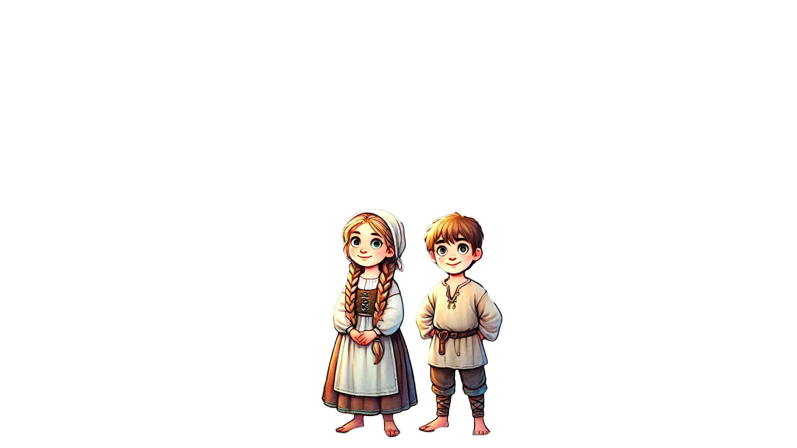
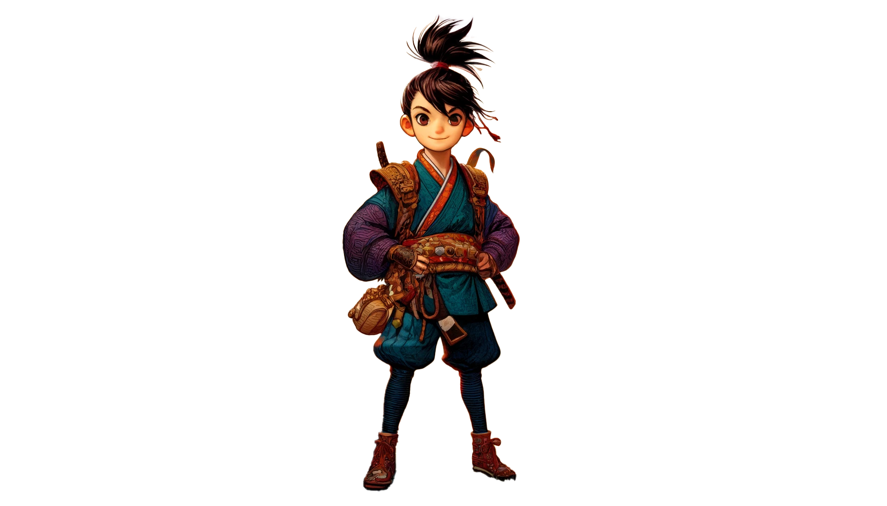
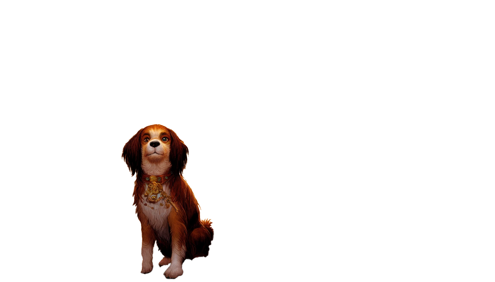
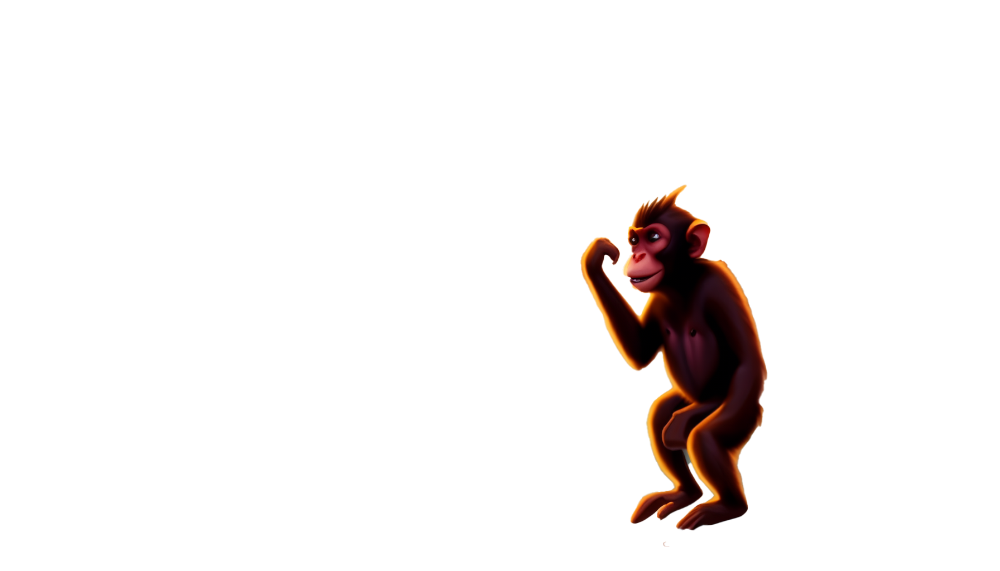
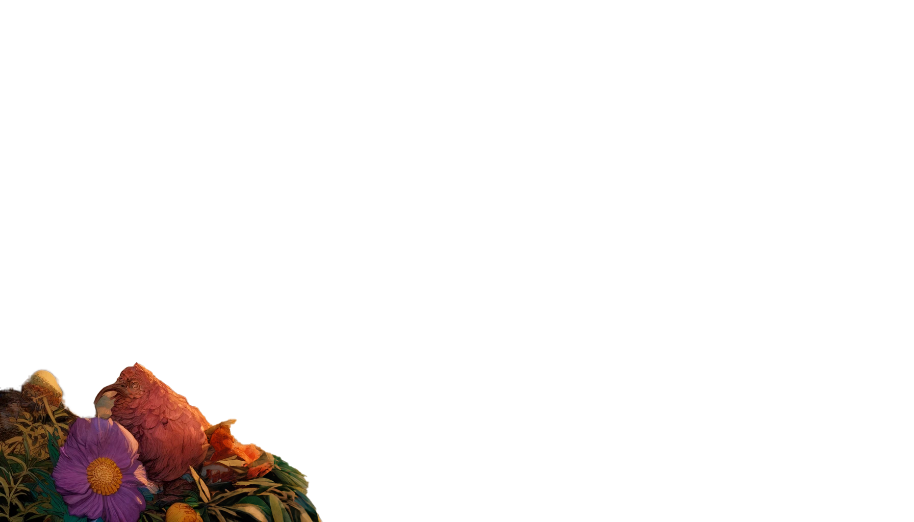

私のお気に入りの絵本
My favorite story book


仲睦まじい兄妹ヘンゼルとグレーテルが、継母に森に捨てられ、魔女の住むお菓子の家に迷い込む物語。





桃から生まれた男の子、「桃太郎」が仲間を引き連れて、鬼を討伐する物語。
ヘンゼルはこの話を聞いて、夜中にこっそり家を出て、小石を集めました。「これで森で道を見つけることができるよ。」
翌朝、両親はヘンゼルとグレーテルを森の奥深くに連れて行きました。ヘンゼルはこっそりと小石を落としていきました。
両親は子供たちを置き去りにして帰りました。ヘンゼルとグレーテルは小石をたどって家に帰りました。しかし、継母は再び彼らを森に連れて行くことにしました。
今度は、ヘンゼルはパンくずを落としていきましたが、鳥たちがパンくずを食べてしまいました。ヘンゼルとグレーテルは道に迷ってしまいました。
森の中を彷徨っていると、二人はお菓子の家を見つけました。お腹を空かせた二人は、その家に駆け寄りました。
家の中には魔女が住んでいました。魔女は子供たちを捕まえ、ヘンゼルを檻に閉じ込めました。グレーテルは家事をさせられました。
魔女はヘンゼルを太らせて食べようとしましたが、ヘンゼルは毎回骨を出して騙しました。ある日、グレーテルは魔女をかまどに突き落としました。
魔女を倒した二人は、家の中のお宝を見つけ、家に帰りました。父親は継母と別れていました。彼らは幸せに暮らしました。